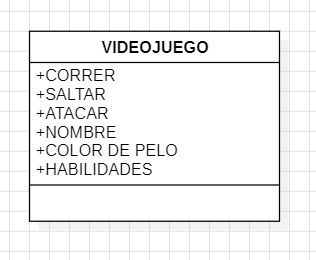
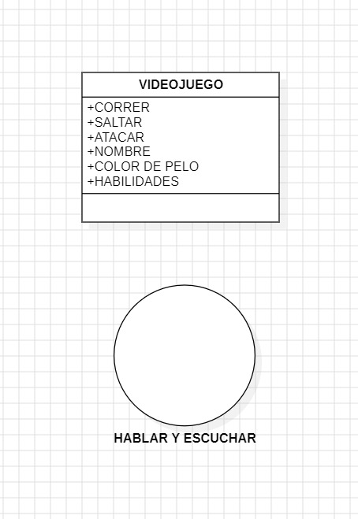
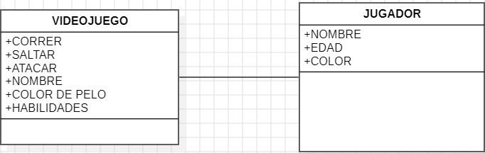
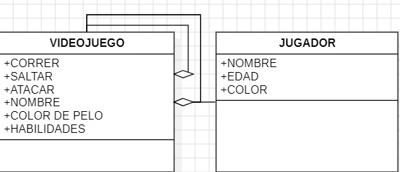
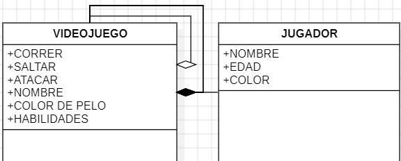
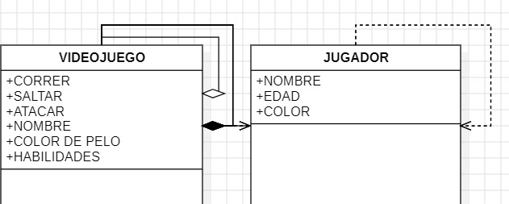
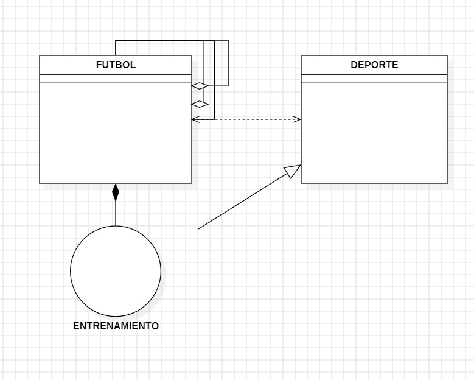

Modelado UML
Clases
Una clase es como un modelo o un plan para crear objetos similares. Imagina que quieres diseñar un videojuego y necesitas muchos personajes. La clase sería como un molde para crear esos personajes. En el molde, especificas qué características tienen los personajes (como nombre, color de pelo, habilidades) y qué pueden hacer (como correr, saltar, atacar). Cada personaje que crees siguiendo ese molde sería un objeto de esa clase. Entonces, en resumen, una clase en UML es como un conjunto de instrucciones para hacer objetos que se parecen y actúan de la misma manera.

Interfaz
Una interfaz define un conjunto de acciones que una clase debe ser capaz de realizar, pero no especifica cómo se realizan esas acciones. Imagina que en tu videojuego quieres que los personajes puedan comunicarse entre sí. La interfaz sería como un contrato que dice "todos los personajes deben poder hablar y escuchar". Pero no importa si los personajes hablan de manera diferente o si tienen diferentes formas de escuchar, siempre que cumplan con el contrato de poder hablar y escuchar. Entonces, una interfaz en UML proporciona una guía sobre qué acciones deben poder realizar los objetos de una clase, sin especificar cómo se implementan esas acciones.

Asociación
una asociación representa una relación entre dos clases. Volviendo al ejemplo del videojuego, imagina que tienes dos clases: "Jugador" y "Objeto". La asociación entre estas dos clases podría representar el hecho de que un jugador puede tener varios objetos (como armas o pociones) y un objeto puede pertenecer a un solo jugador en un momento dado. Esta asociación se representa mediante una línea que conecta las dos clases, con un posible indicador de dirección para mostrar la dirección de la relación. En resumen, una asociación en UML describe cómo dos clases están relacionadas entre sí en un sistema.

Asociación Dirigida
Una asociación dirigida representa una relación entre dos clases donde una clase tiene conocimiento de la otra, pero no necesariamente viceversa. Continuando con el ejemplo del videojuego, podríamos tener una clase "Personaje" y una clase "Misión". La asociación dirigida desde la clase "Personaje" hacia la clase "Misión" podría representar el hecho de que un personaje tiene conocimiento de las misiones que debe completar en el juego. Sin embargo, las misiones pueden existir independientemente de cualquier personaje específico y no necesitan conocer a los personajes que las realizan. En resumen, una asociación dirigida en UML indica que una clase tiene conocimiento o referencia a otra clase, pero no necesariamente al revés.

Agregación
La agregación es un tipo de asociación que representa una relación "todo-parte" entre dos clases, donde una clase (todo) contiene a la otra clase (parte), pero la parte puede existir independientemente del todo. Siguiendo con el ejemplo del videojuego, podríamos tener una clase "Equipo" que representa un conjunto de jugadores. La agregación entre las clases "Equipo" y "Jugador" significaría que un equipo está compuesto por varios jugadores, pero los jugadores pueden existir fuera del equipo. En otras palabras, un jugador puede pertenecer a un equipo, pero también puede existir por sí mismo sin estar asociado a ningún equipo. Esta relación se representa con un diamante en la clase "todo" (Equipo) apuntando hacia la clase "parte" (Jugador) para indicar la agregación..

Composición
La composición es una relación "todo-parte" entre dos clases donde la parte (objeto) es una parte vital del todo (objeto principal), lo que significa que la parte no puede existir sin el todo. Por ejemplo, en un videojuego, si tenemos una clase "Equipo" que representa un conjunto de jugadores, la composición entre "Equipo" y "Jugador" significaría que los jugadores son una parte vital del equipo y no pueden existir independientemente de él. Si el equipo se disuelve, los jugadores también se disuelven. Esta relación se representa con un diamante en la clase "todo" apuntando hacia la clase "parte", pero con un borde sólido para indicar la composición.

Dependencia
La dependencia representa una relación entre dos clases donde una clase utiliza los servicios de otra clase, pero no hay una asociación estructural permanente entre ellas. En otras palabras, un cambio en la clase proveedora puede afectar a la clase que depende de ella, pero no al revés. Por ejemplo, en un videojuego, si tenemos una clase "Jugador" que necesita usar una clase "Arma", la clase "Jugador" depende de la clase "Arma" para realizar acciones como atacar o defenderse. Sin embargo, la clase "Arma" puede cambiar sin afectar directamente a la clase "Jugador". La dependencia se representa mediante una línea punteada con una flecha que apunta desde la clase que depende hacia la clase que proporciona el servicio.

Generalización
La generalización representa una relación entre dos clases donde una clase (clase hija) hereda las características y comportamientos de otra clase (clase padre). Esto significa que la clase hija es una versión más específica de la clase padre y puede tener sus propios atributos y métodos adicionales además de los heredados. Por ejemplo, en un videojuego, podríamos tener una clase "Personaje" como clase padre y clases hijas como "Guerrero", "Mago" y "Arquero", cada una de las cuales hereda los atributos y métodos básicos de la clase "Personaje", pero también puede tener sus propias habilidades únicas. La relación de generalización se representa mediante una línea sólida con una flecha que apunta desde la clase hija hacia la clase padre.

Realización de Interfaz
La realización de interfaz representa una relación donde una clase implementa los métodos definidos en una interfaz. Por ejemplo, en un juego, una clase "Enemigo" puede implementar la interfaz "Atacante", que define métodos como "atacar" y "recibirDaño". La clase "Enemigo" proporcionaría su propia implementación para estos métodos, permitiendo que los enemigos del juego ataquen a los jugadores y respondan al daño recibido.
Nombre de Integrantes
Luis Felipe Molina, Oscar Julian Chavez, Michael Yamid Suarez